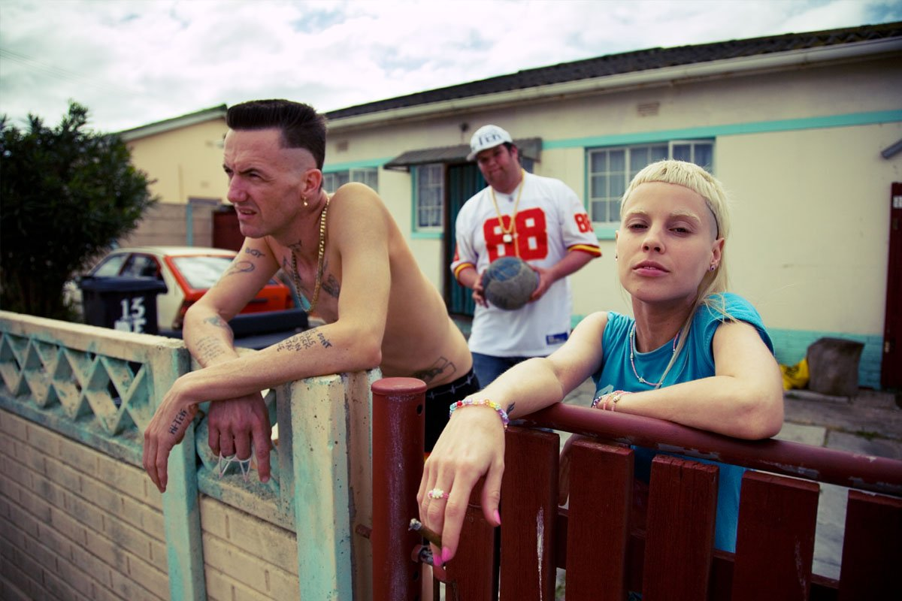
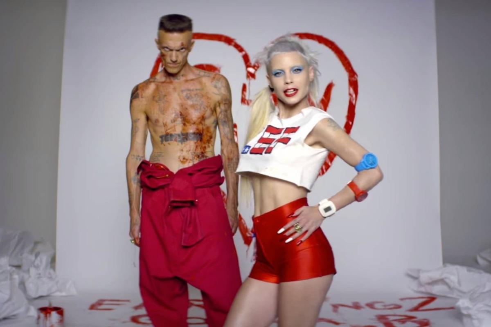

| 1. | "Whatever Man" | 0:33 |
| 2. | "Wat Kyk Jy?" | 4:36 |
| 3. | "Enter the Ninja" | 5:08 |
| 4. | "Wat Pomp" | 4:08 |
| 5. | "Wie Maak Die Jol Vol" | 5:08 |
| 6. | "Rich Bitch" | 3:32 |
| 7. | "I Don't Need You" | 3:57 |
| 8. | "Very Fancy" | 2:52 |
| 9. | "Dagga Puff" | 4:40 |
| 10. | "My Best Friend" | 1:19 |
| 11. | "Liewe Maatjies" | 3:42 |
| 12. | "$copie" | 3:12 |
| 13. | "Beat Boy" | 8:20 |
| 14. | "Super Evil" | 4:01 |
| 15. | "Doos Dronk" | 3:51 |
| 16. | "$O$" | 4:00 |
| 17. | "Jou Ma Se Poes In'N FishPaste Jar" | 4:16 |
| 18. | "Orinoco Ninja Flow" | 3:27 |
| 1. | "Never Le Nkemise 1" | 2:52 |
| 2. | "I Fink U Freeky" | 4:40 |
| 3. | "Pielie" | 0:09 |
| 4. | "Hey Sexy" | 5:08 |
| 5. | Fatty Boom Boom | 3:45 |
| 6. | "Zefside Zol (Interlude)" | 0:56 |
| 7. | "So What?" | 3:51 |
| 8. | "Uncle Jimmy (Skit)" | 1:21 |
| 9. | "Baby's On Fire" | 3:56 |
| 10. | "U Make a Ninja Wanna Fuck" | 3:16 |
| 11. | "Fok Julle Naaiers" | 3:54 |
| 12. | "DJ Hi-Tek Rulez" | 1:37 |
| 13. | "Never Le Nkemise 2" | 3:21 |
| 1. | "Don't Fuk Me" | 0:28 |
| 2. | "Ugly Boy" | 3:33 |
| 3. | "Happy Go Sucky Fucky" | 4:11 |
| 4. | "Zars" | 1:05 |
| 5. | "Raging Zef Boner" | 3:19 |
| 6. | "Pompie" | 1:16 |
| 7. | "Cookie Thumper!" | 3:20 |
| 8. | "Girl I Want 2 Eat U" | 4:04 |
| 9. | "Pitbull Terrier" | 3:40 |
| 10. | "Strunk" | 4:30 |
| 11. | "Do Not Fuk wif da Kid" | 1:03 |
| 12. | "Rat Trap 666" | 5:44 |
| 13. | "I Don't Dwank" | 3:25 |
| 14. | "Sex" | 4:36 |
| 15. | "Moon Love" | 2:17 |
| 16. | "Donker Mag" | 3:20 |
| 1. | "We Have Candy" | 3:03 |
| 2. | "Daddy" | 3:59 |
| 3. | "Banana Brain" | 4:48 |
| 4. | "Shit Just Got Real" | 3:48 |
| 5. | "Gucci Coochie" | 4:05 |
| 6. | "Wings on My Penis" | 1:15 |
| 7. | "U Like Boobies?" | 1:15 |
| 8. | "Rats Rule" | 3:41 |
| 9. | "Jonah Hill" | 1:07 |
| 10. | "Stoopid Rich" | 3:05 |
| 11. | "Fat Faded Fuck Face" | 4:01 |
| 12. | "Peanutbutter + Jelly" | 2:21 |
| 13. | "Alien" | 4:16 |
| 14. | "Street Light" | 4:58 |
| 15. | "Darkling" | 3:35 |
| 16. | "I Don't Care" | 4:44 |